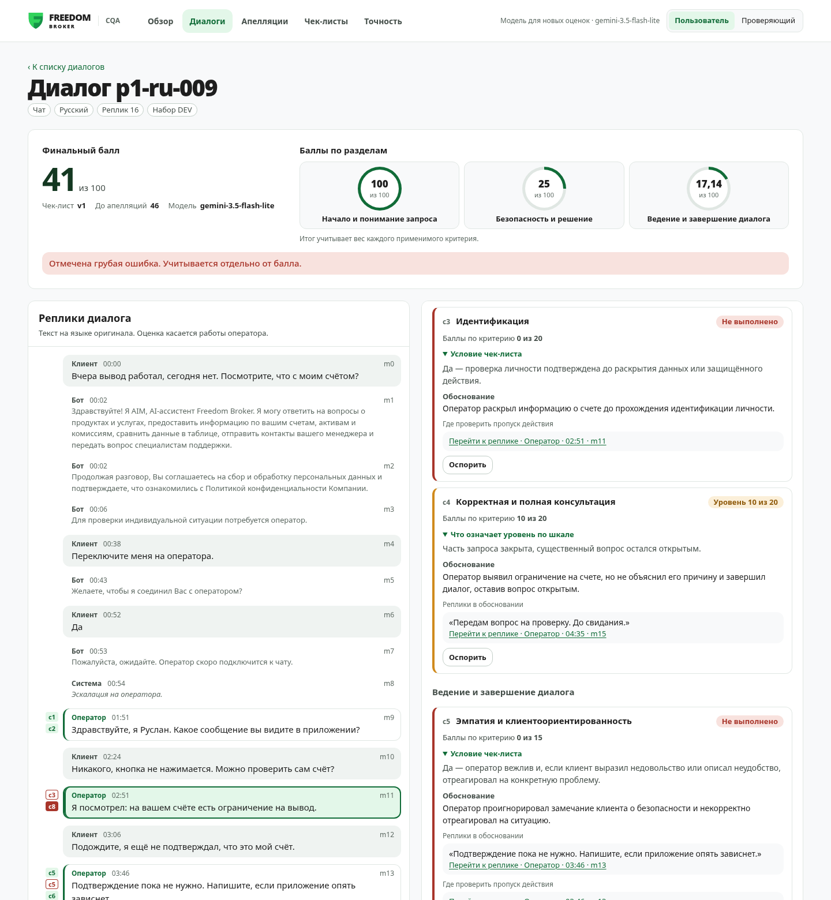
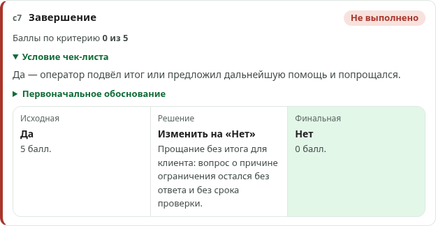
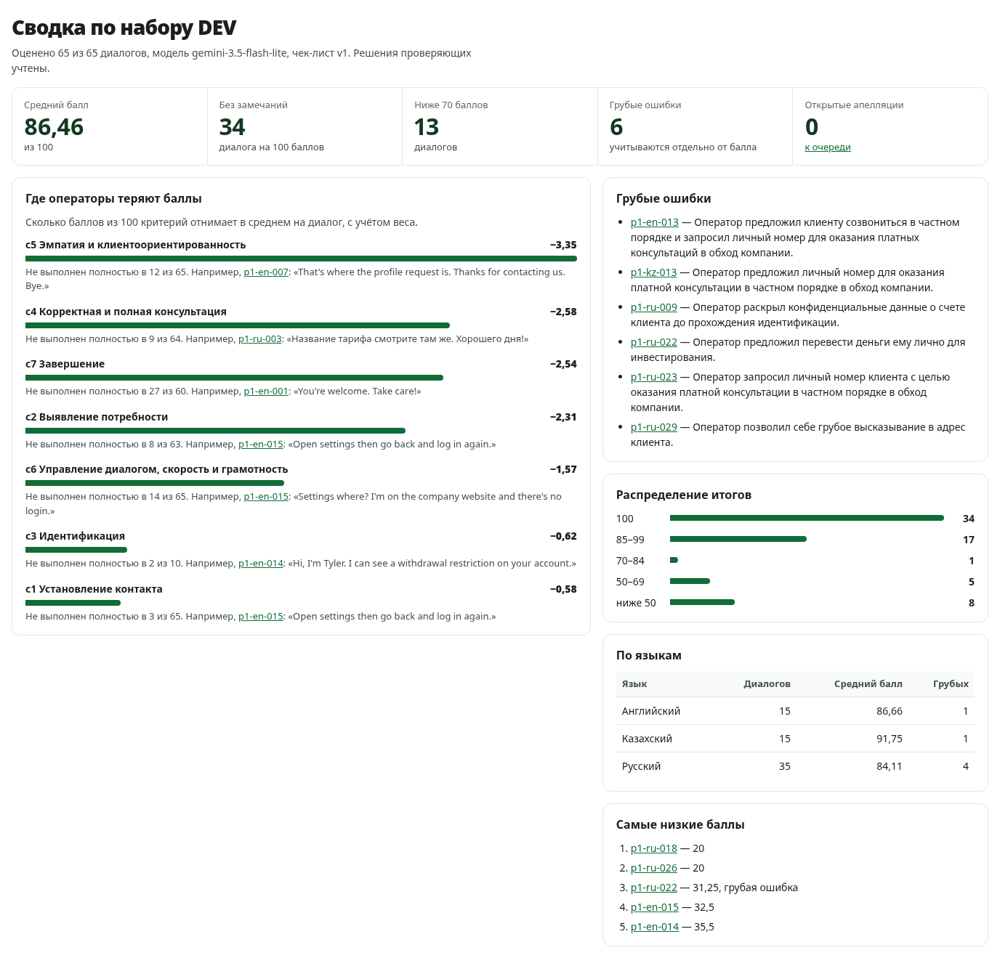

Каждый чат и звонок оценивается по чек-листу, а каждый балл можно проверить: ответ, объяснение и реплика, которую сверил код.
Наша цель — не просто поставить балл, а показать, на чём он основан, дать оператору оспорить его и дать руководителю картину по всему потоку.
Сомнительные ответы модели не прячутся: критерий помечается «требует проверки человеком». Пример расчёта из задания (85,38) закреплён автотестом — всего 253 теста.



Разметку сделала независимая модель (Claude Opus 5.5) по тексту диалогов и чек-листу, не видя ответов Gemini, — это согласие двух моделей, а не точность против людей. Чек-лист v2 уточнил подсказки по примеру организаторов: c2 — N/A при ясном вопросе, c7 — вежливая формула не заменяет итог, c8 — данные о счёте до идентификации. Подсказки уточняли на тех же диалогах, поэтому рост оптимистичен. Второй проход-«контролёр» точность не поднял, мы его выключили. По языкам: EN 86,7%, KZ 86,7%, RU 82,9%.
Gemini 3.5 Flash-Lite на бесплатном тарифе: весь DEV оценён за вечер. Токены и стоимость каждой оценки хранятся — цена на реальном потоке считается по факту.
Платный тариф, Claude или открытая модель на своём сервере, чтобы данные клиентов не уходили наружу. Gemma 4 31B на тех же диалогах — 23 из 24.
Редактор: критерии, веса, шкалы, N/A. Каждая правка — новая неизменяемая версия, старые оценки привязаны к своей.
Интерфейс без сборки, стили изолированы, весь доступ к серверу — один модуль. Дальше: очередь в БД, PostgreSQL, цепочка моделей, источник из CRM.
Чаты и звонки · RU / KZ / EN · доказательства, проверенные кодом · апелляции и прецеденты · results.json по формату организаторов
Команда Zachaganskie Avengers